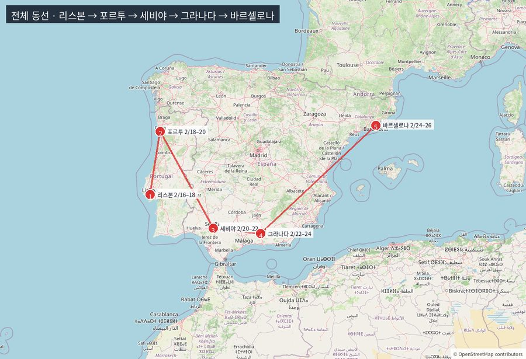

2/16 (화)
인천 → 리스본

| 시각 | 일정 | 근거 | 비용(2인) |
|---|---|---|---|
| — | 숙박 리스본 · Ouro Rossio Hotel (9.3·693후기·중심 150m) | Booking 실조회 | 135,459 |
| 06:30 | 기상 · 집 → 인천공항 (공항버스) | 추정 | 30,000 |
| 07:40 | 공항 조식(커피·샌드위치) | 추정 | 20,000 |
| 08:30 | 체크인 · 수하물 · 출국심사 | — | |
| 10:30 | ICN 출발 · 항공(가는편, 루프트한자 FRA 18h55 · 2인) · 스카이스캐너 2/16 ICN→LIS | 항공 조회 | 1,262,800 |
| — | 경유 1회 · 총 16~20시간 · 기내식 | 추정 | 35,000 |
| 19:30 | 리스본(LIS) 도착 · 입국 | — | |
| 20:10 | 메트로 Aeroporto → 바이샤 (25분 · €1.90/인) | 공식 요금 | 6,000 |
| 20:45 | 숙소 체크인 · 짐 풀기 | — | |
| 21:40 | 저녁 — 좌식 레스토랑 (prato do dia €16~24) | 실제 메뉴 | 65,000 |
| 22:50 | 마트 물·간식 | 추정 | 15,000 |
| 23:20 | 취침 | — | |
| 숙박 135,459 · 식비 135,000 · 입장·이동 1,298,800 | 1,569,259 |
이 날 합계1,569,259